File: 000360.gt.txt (if the image is defective, simply delete all Arabic text and the line will be excluded)
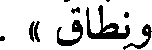
ونطاق » .
File: 000361.gt.txt (if the image is defective, simply delete all Arabic text and the line will be excluded)
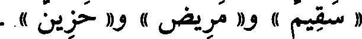
« سقيم » و« مريض » و« حزين » .
File: 000362.gt.txt (if the image is defective, simply delete all Arabic text and the line will be excluded)
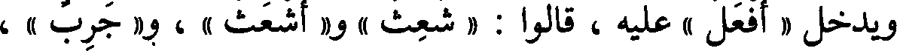
ويدخل « أفعل » عليه ، قالوا : « شعث » و« أشعث » ، و« جرب » ،
File: 000363.gt.txt (if the image is defective, simply delete all Arabic text and the line will be excluded)
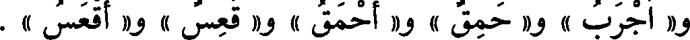
و« أجرب » و« حمق » و« أحمق » و« قعس » و« أقعس » .
File: 000364.gt.txt (if the image is defective, simply delete all Arabic text and the line will be excluded)
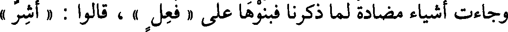
وجاءت أشياء مضادة لما ذكرنا فبنوها على « فعل » ، قالوا : « أشر »
File: 000365.gt.txt (if the image is defective, simply delete all Arabic text and the line will be excluded)
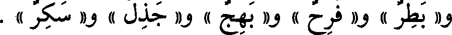
و« بطر » و« فرح » و« بهج » و« جذل » و« سكر » .
File: 000366.gt.txt (if the image is defective, simply delete all Arabic text and the line will be excluded)
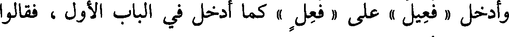
وأدخل « فعيل » على « فعل » كما أدخل في الباب الأول ، فقالوا
File: 000367.gt.txt (if the image is defective, simply delete all Arabic text and the line will be excluded)
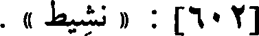
[602] : « نشيط » .
File: 000368.gt.txt (if the image is defective, simply delete all Arabic text and the line will be excluded)
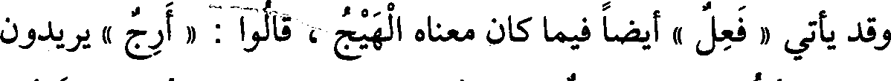
وقد يأتي « فعل » أيضا فيما كان معناه الهيج ، قالوا : « أرج » يريدون
File: 000369.gt.txt (if the image is defective, simply delete all Arabic text and the line will be excluded)
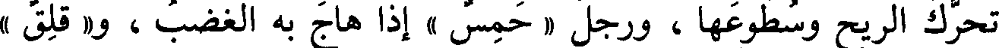
تحرك الريح وسطوعها ، ورجل « حمس » إذا هاج به الغضب ، و « قلق »
File: 000370.gt.txt (if the image is defective, simply delete all Arabic text and the line will be excluded)
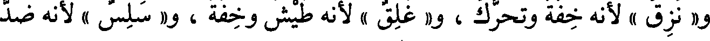
و« نزق » لأنه خفة وتحرك ، و« غلق » لأنه طيش وخفة ، و« سلس » لأنه ضد
File: 000371.gt.txt (if the image is defective, simply delete all Arabic text and the line will be excluded)
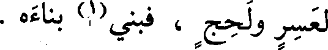
لعسر ولحج ، فبنى(1) بناءه .
File: 000372.gt.txt (if the image is defective, simply delete all Arabic text and the line will be excluded)
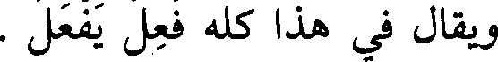
ويقال في هذا كله فعل يفعل .
File: 000373.gt.txt (if the image is defective, simply delete all Arabic text and the line will be excluded)
باب(2) الصفات بالألوان
File: 000374.gt.txt (if the image is defective, simply delete all Arabic text and the line will be excluded)
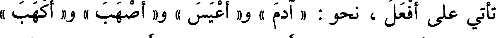
تأتي على أفعل ، نحو : « آدم » و« أعيس » و« أصهب » و« أكهب »
File: 000375.gt.txt (if the image is defective, simply delete all Arabic text and the line will be excluded)
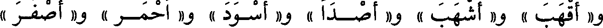
و« أقهب » و« أشهب » و« أصدأ » و« أسود » و« أحمر » و« أصفر »
File: 000376.gt.txt (if the image is defective, simply delete all Arabic text and the line will be excluded)
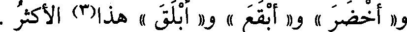
و« أخضر » و« أبقع » و« أبلق » هذا(3) الأكثر .
File: 000377.gt.txt (if the image is defective, simply delete all Arabic text and the line will be excluded)
باب ما جاء على فعلة فيه لغتان
File: 000378.gt.txt (if the image is defective, simply delete all Arabic text and the line will be excluded)
فعلة وفعلة(1)
File: 000379.gt.txt (if the image is defective, simply delete all Arabic text and the line will be excluded)
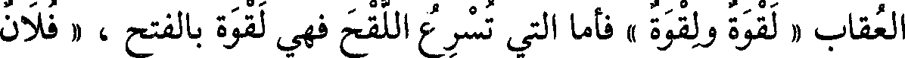
العقاب « لقوة ولقوة » فأما التي تسرع اللقح فهي لقوة بالفتح ، « فلان
File: 000380.gt.txt (if the image is defective, simply delete all Arabic text and the line will be excluded)
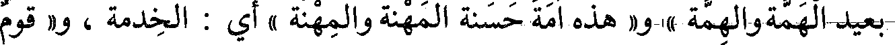
بعيد الهمة والهمة » و« هذه أمة حسنة المهنة والمهنة » أي : الخدمة ، و« قوم
File: 000381.gt.txt (if the image is defective, simply delete all Arabic text and the line will be excluded)
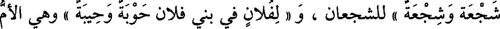
شجعة وشجعة » للشجعان ، و « لفلان في بني فلان حوبة وحيبة » وهي الأم
File: 000382.gt.txt (if the image is defective, simply delete all Arabic text and the line will be excluded)
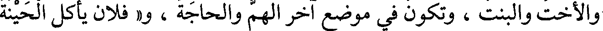
والأخت والبنت، وتكون في موضع آخر الهم والحاجة ، و« فلان يأكل الحينة
File: 000383.gt.txt (if the image is defective, simply delete all Arabic text and the line will be excluded)
والحينة » أي : مرة في اليوم ، وهي « الطسة والطسة » للطست .
File: 000384.gt.txt (if the image is defective, simply delete all Arabic text and the line will be excluded)
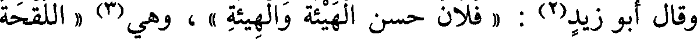
وقال أبو زيد(2) : « فلان حسن الهيئة والهيئة » ، وهي(3) « اللقحة
File: 000385.gt.txt (if the image is defective, simply delete all Arabic text and the line will be excluded)
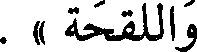
واللقحة » .
File: 000386.gt.txt (if the image is defective, simply delete all Arabic text and the line will be excluded)
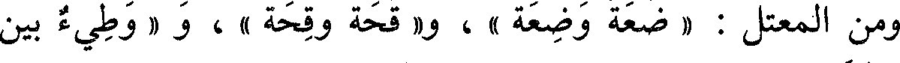
ومن المعتل : « ضعة وضعة » ، و« قحة وقحة » ، و « وطيء بين
File: 000387.gt.txt (if the image is defective, simply delete all Arabic text and the line will be excluded)
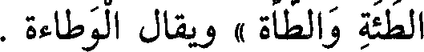
الطئة والطأة » ويقال الوطاءة .
File: 000388.gt.txt (if the image is defective, simply delete all Arabic text and the line will be excluded)
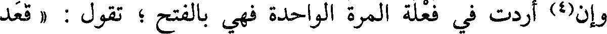
وإن(4) أردت في فعلة المرة الواحدة فهي بالفتح ؛ تقول : « قعد
File: 000389.gt.txt (if the image is defective, simply delete all Arabic text and the line will be excluded)
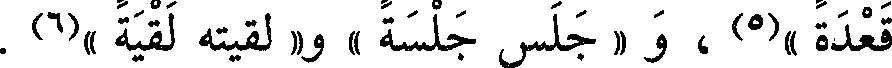
قعدة »(5) ، و « جلس جلسة » و« لقيته لقية »(6) .
To Save: `Ctrl+s`, make sure to choose `Webpage, complete`!